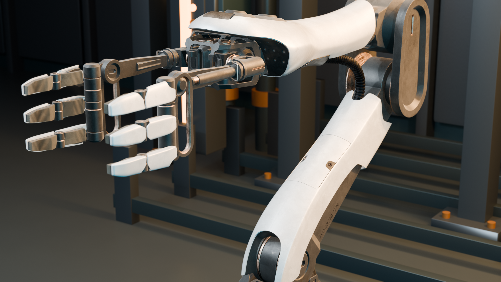

CHARGE ASSET / REAL DSH PLUGIN WORKFLOW
夜班。Night Shift.
把 Blender 官方电影中的复杂机器人，
放进新的工业布景。保留机械结构与原生材质，
用真实灯光和镜头运动，做出一个自己的场景。


79 MESH PARTS / 511,595 POLYGONS
复杂模型，保留在场景里。
官方 Packbot 的 79 个几何部件、原生材质与 UV 被保留；使用中的 19 张图片已嵌入。DSH 中的 deep-blend 插件完成新布景、灯光和相机轨道，输出可重新打开的模型与逐帧渲染视频。
机器人为原始资产第 1 帧的静态几何版本。视频展示相机运动；新增标题与署名仅用于推广版排版。